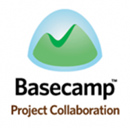

Use a spacebar or arrow keys to navigate
Ever feel overwhelmed by all the web apps you are using to run your business?
Woud you like to control all of them in one single place?
Then you should try
DASH
A super-powered launcher inspired by Greplin and Alfred (+our team DNA in SMB apps) that can perform actions and search data across 30+ business web apps.
Launch any web apps with a quick shortcut.
DASH will learn which web apps you use often and
prioritise them when you search.
Quick web apps search.
Get quick access to your business information and files on the cloud.
Perform actions and get tasks done instantly.
New project, assign to-dos, new dev story...etc. Increase your productivity.
Browse web apps major activities without having to go to the apps.
One more thing...
It can communicate between
different web apps, too!
DASH is
Greplin + Alfred
(on steroid) for SMB